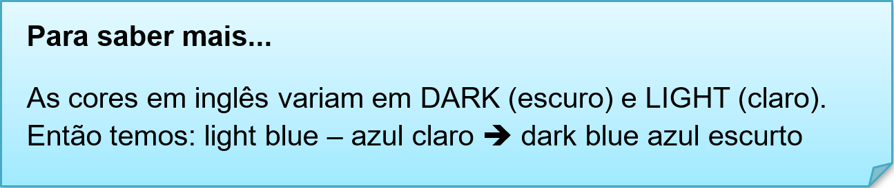

Capítulo 4: Textile and Clothes – Têxtil e Vestuário
Vamos expandir nosso vocabulário sobre indústria têxtil e vestuário. Vamos ver se conseguimos identificar alguns itens nesse texto.
The clothes can be made of any material: wool, silk, cotton, linen, soft plush... With theses material we make: dress, jacket, paints, shirt. T-shirts, scarf, blouse. In the factories the clothes are special. The material changes, for example: leathers, jeans. Because these material are more stronger than others. So, it more safer and we called uniforms.
Você já pensou sobre isso também?
Nessa breve introdução observamos as diversas matérias primas das roupas (destacadas em vermelho) e algumas roupas que usamos no dia a dia (destacadas em azul). As roupas podem ser classificadas por seasons (estações do ano), sexo (women/men), places (lugares), tamanho (size) e cores (colors).
Expandindo o vocabulário
Veja nosso dicionário ilustrado e amplie seus conhecimentos. Lembre-se que as roupas estão muito ligadas a cultura de um lugar/país.
Reconstruindo conhecimentos
Os tamanhos das roupas brasileira e estrangeiras são diferenciados e as nomenclaturas delas também. Veja a tabla dos tamanhos.
• Os tamanhos em inglês são considerados adjetivos em inglês assim como as cores e suas variações. E os adjetivos são posicionados antes dos substantivos. Observe:
The extra large shirt. > A camisa extra grande.
• As cores também são características, são posicionadas antes do substantivos. Observe:
The blue shirt. > A camisa azul.

Tabela de cores em inglês
Assista ao vídeo e veja a tecnologia aplicada as roupas
Seasons of the year - As estações do ano
SUMMER (VERÃO)
No Brasil e em todo o hemisfério sul, o verão acontece em Dezembro, Janeiro e Fevereiro. No hemisfério norte, vai de Junho a Agosto. Esse período de sol e calor é normalmente reservado para as férias escolares em ambos os hemisférios.
In the United States, summer is during June, July and August.
Nos Estados Unidos, o verão é durante Junho, Julho e Agosto.
FALL (OUTONO)
No hemisfério sul, o outono acontece entre Março e Maio. No hemisfério norte, de Setembro a Novembro. É a estação de dias mais frescos e da queda das folhas das árvores.
The fall season in Europe is during the months of September, October and November.
A estação de outono na Europa é durante os meses de Setembro, Outubro e Novembro.
WINTER (INVERNO)
O inverno no hemisfério sul acontece durante Junho, Julho e Agosto. No hemisfério norte, entre Dezembro, Janeiro e Fevereiro, com muita neve e patinação no gelo.
Winter in Canada is in December, January and February.
O inverno no Canadá é em Dezembro, Janeiro e Fevereiro.
SPRING (PRIMAVERA)
No hemisfério sul, a primavera é em Setembro, Outubro e Novembro. No hemisfério norte, a estação das flores acontece nos meses de Março, Abril e Maio.
In England, the spring is during March, April and May.
Na Inglaterra, a primavera é durante Março, Abril e Maio.
Uso do imperativo
O imperativo é usado pelo falante para dar uma sugestão, uma ordem, um conselho ou uma instrução para que uma determinada ação aconteça.
O imperativo poderá marcar algumas ações, como:
fazer um convite: Let’s go now. (Vamos agora) – para convites sempre utilizar o “Let’s”;
fazer um oferecimento: Have a piece of cake. (Tome um pedaço de bolo);
dar uma ordem: Listen to them. (Ouça eles);
fazer um pedido: Open the door. (Abra a porta);
dar um conselho: Be careful! (Seja cuidadoso).
Se for necessário formar o imperativo na negação basta acrescentar o auxiliar “do” mais o “not” (forma contraída don’t) no começo da frase.
Exemplos:
Do not (don’t) eat this cake. (Não coma esse bolo)
Do not (don’t) forget to close the window. (Não esqueça de fechar a janela)
Aplicando ao nosso vocabulário
Put on your jacket! > Coloque a jaqueta.
Wear the blouse! > Vista a blusa.
Don’t wear wool blouse! You are allergic. > Não vista blusa de lã. Você é alérgico.
O que aprendi
• Nesta unidade aprendemos o vocabulário têxtil e de vestuário;
• Aprendemos aplicar os adjetivos;
• Ampliamos os conhecimentos sobre cores, estações e tamanhos de roupas;
• Aprendemos a fazer frases no modo imperativo.
Praticando
O clima muda, a estação muda e o que vestimos? Faça uma lista de roupas que usamos em cada estação do ano.
Observa a imagem, descreva o tamanho e as cores em inglês de cada roupa.
________________________
________________________
________________________
________________________
________________________
________________________
________________________
Analise a imagem e faça frases no imperativo. Utilize nosso vocabulário de roupas e estações.